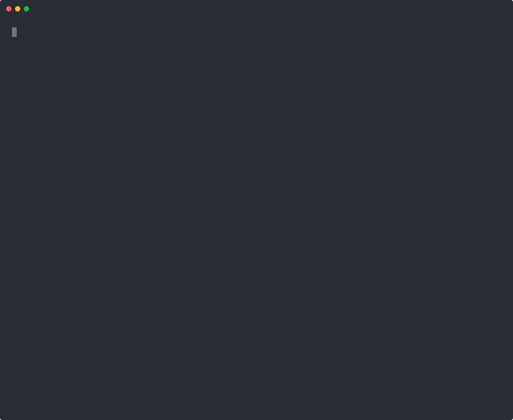

optlens finds why an LP or MILP model is infeasible, the smallest change that fixes it, and what a change costs, then says it in words a planner understands. Use it from Python, any MCP client, or Claude Code, on HiGHS, SCIP or your own Gurobi.
pip install "optlens[scip,mcp] @ git+https://github.com/jjd-lab/optlens"
claude plugin marketplace add jjd-lab/optlens # Claude Code
claude plugin install optlens@optlens
codex mcp add optlens -- optlens-mcp # Codex (others: one line)Infeasible, wrong and working LP and MILP models of up to 837,000 constraints, each case with a solver-verified answer key. Claude with optlens is compared with the same agent given only a solver; both get the same model context.
Every answer comes from a solve, and every recommended fix is re-solved before it is offered.
The conflicting constraints (an IIS), grouped by family, even on models with hundreds of thousands of constraints.
The smallest change per family that restores feasibility, with the best plan it allows, and inputs that break their own pattern, each with its undo already solved.
Edits as versions, why-not questions, marginal values and sensitivity, without touching your model code.
Changes against the closest optimal plan, so an edit shows what it forces, not the solver's choice among ties.
Open several models or scenarios side by side and compare status, objective and every family's metrics, or ask a what-if on one of them.
A model context generated once from your document or code: each family's business meaning, checked against the model, saved as JSON your team reviews and reuses.
A clean Claude Code with the optlens plugin, on the hotel pack's week after a data load typed one night's group target as 1,200 instead of 120: it finds the cause, checks the fix by re-solving, then prices each business rule. Rendered from a recorded session; each tool call shows its real duration.
Try the same week yourself, in a setup of its own:
git clone https://github.com/jjd-lab/optlens && optlens/scripts/sandbox.sh ~/optlens-try
optchat, a chat agent built on optlens, lets the people who act on a model's plan (planners, analysts, managers) work with it in plain language. It keeps every change as a version, compares scenarios side by side, carries a change across linked models (a new rate plan into the booking plan), and applies nothing until the planner approves, recording each decision. Here a planner finds a data-entry error, approves the fix and asks what the rules cost (waiting time cut to two seconds). Available on request: hello@optlens.dev.

Load the file, the model object, or the script that builds it.
One MCP server, connected with one line; the agent gets the tools and the method together. Local, on your machine.